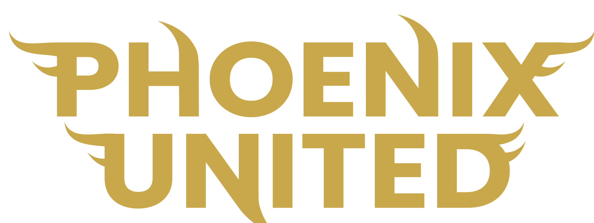

A real club.
A real first impression.
Try the supplied photography in the Club hero, then explore the fixture calendar with saved UAEFA results below it.

Dubai, UAE

Built
to rise.
The person before the player. Developing footballers, building futures and creating pathways beyond the pitch.
UAE FA Licensed Dubai, UAE
2026/27
League Fixtures
Third Division League · First Group
Phoenix United FCChecking the season…
Scroll horizontally to view the full season.
Loading official fixtures…
This season’s results
Newest first · Official UAEFA results
Local review: the hero and fixture section are placed together so you can review them quickly. On the live Club page, the fixtures remain in their existing position below the club content. Goal-to-screen delay still needs a real matchday check.
Ten photographs.
Ten ways to open.
Ranked for club identity, composition, recognisable kit and a useful desktop/mobile treatment. Each choice previews in the hero above.
From your shared photoshoot.
Original filenames preserved.
What was reviewed, and what was left out
I visually compared all 10 direct group photos, all 19 freestyle photos, all 28 high-angle images, and 11 distinct classic away-kit photographs (plus their available PNG variants). This is a curated shortlist from those sets, not a claim to have inspected every file in the shared folder. Headshots and product-only photos are less suited to this homepage brief and were deprioritised.
The high-angle images use a strong red photographic treatment, which pulls away from Phoenix’s black/gold visual identity. The classic white-background photos are useful for squad pages; one rear-shirt photograph is included as a real alternative to the current AI player concept.
These local files are SharePoint’s downloaded image previews, generally up to 2048 × 2560. Once a photo is selected, use the matching original from SharePoint for the production export. The existing AI image is absent from this review.
Motion, with
real photographs.
No original video footage was found in the supplied Photoshoot Photos folder. This optional silent montage uses three of the actual photographs; it is a slideshow direction, not match footage or AI animation.
For a production hero, keep it muted and short, use a poster image, provide a pause button and show the still photograph when reduced motion or data saving is requested. Portrait footage belongs in the split composition; a wide film needs an actual landscape source.
Recommendation: launch with the selected still. Upgrade to a real 8–12 second film when suitable club footage is supplied.
Download montage previewThe source.
The build. The checks.
Research completed 1 November 2026. Recommendation: use UAEFA for Phoenix’s custom fixture cards, with an explicit check of live timing before production release.
What the two sources actually offer
| Requirement | UAEFA | Sofascore |
|---|---|---|
| Phoenix coverage | Directly verified: club 961, competition 2574, season 59. All 32 fixtures, seven completed results, venues and rescheduled dates. | Phoenix team page and past match goal events are publicly visible. This confirms coverage, not the speed or completeness of every match. |
| Data integration | Website JSON routes returned data without a key during this investigation. They are website endpoints, not a documented developer product or guaranteed service. | Official FAQ says a sports-data API is not offered because of provider agreements. Do not build the custom calendar against an unofficial scraper. |
| Keep Phoenix’s cards | Yes: map official match IDs to Phoenix’s own crests, dates, scores and status labels. | Official widgets keep Sofascore’s presentation. A particular team-results widget for this league still needs confirming; it is not a drop-in source for Phoenix’s custom cards. |
| Live behaviour | Score fields, match status and an update route exist. Goal events verified for a completed Phoenix match. Actual in-play cadence remains unmeasured. | Official widgets are described as updating live. No independently measured delay for Phoenix was established here. |
| Cost / access | No API key or payment was needed for the read-only research requests. Public reachability does not establish a permanent free API or production permission. | Official widgets are advertised as free. API access is unavailable through their stated public offering. |
| Production condition | Confirm with the club/UAEFA that this website route is covered by their permitted feed use and agree a suitable request rate. Retain attribution and a source link. | Use the supplied official embed if its coverage and layout fit, or request an authorised data arrangement. No silent scraping fallback. |
Use UAEFA first.
It already has the match IDs stored in Phoenix’s current calendar, so results can attach to the correct cards without guessing team names. Sofascore is a useful coverage comparison and an optional official embed, but its public offering does not give us the data access needed for this exact design.
Do we need a scraper?
No HTML scraper is needed for the current connection. UAEFA’s own website reads structured JSON from a website endpoint, and this local server reads that same data, validates it, caches it and passes it to Phoenix’s cards. It is technically an internal API; what is missing is a documented, supported public API offering. Sofascore’s supported external option is its official widget. If UAEFA changes its endpoint, keep the last successful results while repairing the connection or arranging an authorised feed; do not silently substitute an unofficial Sofascore scraper.
Verified endpoints and evidence
- Phoenix season: matches?lang=en&club_id=961
Verified 32 unique match IDs. Finished matches return status 6; scheduled matches return status 2. Other status IDs must be checked against real examples before assigning labels.
- Phoenix–ISE match status: match 81981
The update endpoint returns a status text and a change counter. Its response timestamp is not proof of when a goal happened or when it reached UAEFA.
- Phoenix–ISE match timeline: match 81981
Verified final score 1–1, with goal events at 4 and 58 minutes. Historical event minutes establish available detail; they do not establish live delivery speed.
- Arabic season response
Arabic team and venue names were verified. Production keeps UAE/GST kickoff time, Arabic layout and source-provided translated names.
Schedule correction found: match 81921, PASS–Phoenix, is now 29 January 2027 at 17:15 GST. The current site still has 4 September 2026. The integration must update schedules as well as scores.
Exact visitor experience
- Open the existing Club fixture section. Keep the existing heading, club crests, black/bone/gold styling and horizontal cards. Start with the current confirmed in-play match; otherwise start with the latest completed match. Upcoming matches follow in kickoff order.
- Place the scores below the logos. Show a score only when the source provides one. A future match displays “VS” and kickoff time. Labels distinguish Live, Half-time, Full-time, Postponed and Cancelled only when source data supports them. Never manufacture 0–0 or a running minute from the clock.
- Add “View past matches” beside the scroll hint. This is a real button with an expanded state. It reveals the season’s results directly below the main strip, newest first; it does not send the visitor to another site.
- Refresh without moving the visitor. Update the scores in place, preserve the selected card and horizontal scroll, and pause browser polling in hidden tabs. Show “Last checked” and a clear saved-results state if the source fails.
- Replace the AI hero with the selected real photo. Preserve the existing copy and official artwork. Prepare deliberate desktop and mobile crops, or use the split composition to keep the whole subject visible. Keep Arabic copy away from faces and shirt crests.
Production implementation
- Server feed — add
app/api/fixtures/route.tsand a small normalizer. Fetch the fixed UAEFA host on the server; accept no caller-supplied destination. Filter Phoenix club 961 and league 2574, validate IDs, score integers, status and timestamps. Convert source GST into explicit timestamps and preserve zero versus missing scores. - Shared cache and last good result. Store one validated season snapshot in the existing D1 environment, with retrieval time and season ID. Refresh on demand using a shared lease so concurrent visitors do not multiply upstream requests. Serve the previous snapshot when validation or the source fails. Use a source timeout, bounded response size and increasing retry delay.
- Matchday cadence. Proposed upstream ceiling: one shared check per 30 seconds around a match, adjusted to UAEFA’s agreed rate and observed updates. Between matches, refresh schedules about every 15 minutes. The browser checks our cached endpoint, never UAEFA directly. If nobody is viewing, no continuous process is required; the next visitor triggers a freshness check.
- Calendar — update
app/components/fixture-calendar.tsxand its CSS. Reuse the existing opponent crest map and stable match IDs. Add score/status display, upcoming/latest ordering, the inline results disclosure, accessible scroll controls and a narrow-screen layout. Keep the current source file as a clearly dated emergency schedule seed, not an invented result source. - Language and hero. Add the new labels to
app/components/language-controller.tsx; check RTL controls and both team orders. Update the hero asset inapp/page.tsx, its responsive image rules and alt text after the photo is selected. Export WebP/AVIF with a mobile crop; keep originals outside the public build. - Release and rollback. Review the local result, verify the supported source arrangement and observe a matchday, then publish the agreed change. Retain the prior hero and static calendar version for a quick rollback. The local server in this folder is a review tool, not the deployed application.
Acceptance checks before release
- 32 unique fixtures map to the right opponents and source IDs; PASS uses its corrected date.
- Latest completed match is Phoenix 1–1 ISE; missing scores remain missing, and 0 remains a valid goal count.
- Past-match control works by keyboard, announces its state and reveals all seven completed league matches.
- Observe kickoff, a goal, half-time and full-time during a real Phoenix game. Record the source update and the website display time separately.
- Confirm a postponed or cancelled fixture does not appear as live solely because kickoff has passed.
- Simulate timeout, malformed JSON and concurrent visitors; retain last good scores and show honest freshness.
- Check desktop, narrow mobile and Arabic: complete faces, team order, legible scores, visible focus and no page overflow.
- For optional video, verify poster fallback, pause, reduced motion, muted playback and loading cost.
Current review scope: the preview connects to UAEFA and caches locally. It includes real results and fixture sorting. It does not establish a full production status dictionary, a permitted production request rate, or live goal timing. No production site has been changed.
Primary research sources
- UAEFA terms, especially feed use and service availability — the terms distinguish feeds from general site copying. Confirm that the proposed JSON route is an approved feed before public operation.
- Sofascore’s official API availability FAQ — says API endpoints are not shared because of data-provider agreements.
- Sofascore’s official widgets page — describes free, updating embeds, not a custom data API.
- Phoenix United on Sofascore — verifies team coverage.